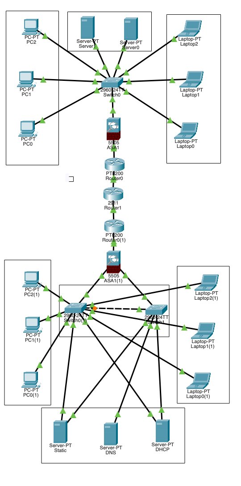

◆ Why I Built This
I am a DevOps engineer. My day-to-day is pipelines, containers, and cloud infrastructure. But infrastructure at rest — the actual physical and logical network underneath all of it — had become a blind spot. I decided to fix that the only way that works: by building something real.
I chose Cisco Packet Tracer because it simulates layer-2 and layer-3 behaviour faithfully enough to surface the same class of bugs you encounter in production. No hand-holding, no auto-complete. If a packet does not route, you debug it.
The goal was a two-region enterprise network — headquarters and branch office — connected over a simulated WAN with proper security controls, documented IP addressing, and real service configuration. I gave myself 48 hours.

The complete two-region topology. Every device, link, and subnet was manually configured.
◆ Architecture Overview
The design mirrors how a real enterprise WAN is structured: two isolated LAN regions, each behind a firewall, each with its own edge router, connected through an ISP to a tunnel endpoint that carries the inter-site traffic.
Region 1 (HQ) Region 2 (Branch) 192.168.1.0/24 192.168.2.0/24 | | [ASA1] [ASA1(1)] Firewall Firewall | | [Router0] [Router0(1)] PT8200 PT8200 | | └──────────[ISP Router]────────────────┘ | [TunnelRouter] GRE Tunnel (10.10.10.0/30)
Region 1 — Headquarters
| Component | Device | IP |
|---|---|---|
| Firewall | Cisco ASA 5505 | 192.168.1.1 inside / 203.0.113.6 outside |
| Edge Router | Cisco PT8200 | 203.0.113.2 / 203.0.113.5 |
| Access Switch | Cisco 2960-24TT | 192.168.1.200 mgmt |
| DHCP + DNS | Server-PT | 192.168.1.100 |
| HTTP Server | Server-PT | 192.168.1.101 |
| End Devices | 3 PCs + 3 Laptops | 192.168.1.10–50 (DHCP) |
Region 2 — Branch Office
| Component | Device | IP |
|---|---|---|
| Firewall | Cisco ASA 5505 | 192.168.2.1 inside / 203.0.114.6 outside |
| Edge Router | Cisco PT8200 | 203.0.114.2 / 203.0.114.5 |
| User Switch | Cisco 2960-24TT | 192.168.2.200 mgmt |
| Server Switch | Cisco 2960-24TT | 192.168.2.201 mgmt |
| DHCP + DNS | Server-PT | 192.168.2.100 |
| HTTP + Static Server | Server-PT | 192.168.2.101 / 192.168.2.102 |
| End Devices | 3 PCs + 3 Laptops | 192.168.2.10–50 (DHCP) |
WAN Infrastructure
| Component | Device | IP |
|---|---|---|
| ISP Router | Cisco 2911 | 203.0.113.1 / 203.0.114.1 |
| Tunnel Router | Cisco 2911 | 10.1.1.2 / 10.10.10.2 |
| GRE Tunnel | Tunnel0 | 10.10.10.0/30 |
◆ VLAN Design
All switches run 802.1q trunking between each other and toward ASA uplinks. Three VLANs isolate traffic by function.
| VLAN | Name | Purpose |
|---|---|---|
| 10 | USERS | End-user workstations and laptops |
| 20 | SERVERS | DHCP, DNS, HTTP, and static servers |
| 30 | MANAGEMENT | Switch and router management access |
VLAN 1 (default) was intentionally left for management after explicitly bringing up each switch's Vlan1 interface — a step that caught me out early (see Problem #12 below).
◆ Security Controls
I mapped every control to ISO 27001 clauses from the start — not as an afterthought. This is what makes the difference between a lab exercise and something an infrastructure architect would actually recognise.
| Control | Implementation | ISO 27001 | Status |
|---|---|---|---|
| Perimeter Firewall | ASA 5505 security zones | A.13.1 | Done |
| Network Segmentation | VLANs 10 / 20 / 30 | A.13.1.3 | Done |
| NAT / PAT | Dynamic PAT on ASA | A.13.1 | Done |
| Port Security | Sticky MAC, violation restrict | A.9.4.2 | Done |
| Time Synchronisation | NTP on all devices | A.12.4.4 | Done |
| Redundancy | Dual switches in Region 2 | A.17.1 | Done |
| Dynamic Routing | OSPF across all routers | A.13.1 | Done |
| WAN Tunnelling | GRE between regions | A.10.1 | Done |
| ACL Hardening | Specific permit / deny rules | A.13.1 | In progress |
| IPSec VPN | Encrypted tunnel | A.10.1 | GNS3 pending |
◆ Services Running
Both regions run a full service stack — DHCP, DNS, HTTP, and NTP — independently on dedicated servers.
| Service | Device | IP | Protocol |
|---|---|---|---|
| DHCP + DNS (R1) | Server0 | 192.168.1.100 | UDP 67/68, UDP 53 |
| HTTP (R1) | Server1 | 192.168.1.101 | TCP 80 |
| NTP (R1) | Server0 | 192.168.1.100 | UDP 123 |
| DHCP + DNS (R2) | Server0(1) | 192.168.2.100 | UDP 67/68, UDP 53 |
| HTTP (R2) | Server1(1) | 192.168.2.101 | TCP 80 |
| NTP (R2) | Server0(1) | 192.168.2.100 | UDP 123 |
◆ 15 Problems Solved
The real learning was in the debugging. Here is every problem I hit, what caused it, and how I fixed it — in the order they appeared.
spanning-tree portfast trunk on uplinksno shutdown◆ Packet Tracer Limitations
Packet Tracer is a simulator, not an emulator. Some production features are absent or unreliable. Here is what I hit and how I worked around each.
ip helper-address for relay. Workaround: DHCP served directly from a dedicated Server-PT.clock set per device.◆ Community Reception
After finishing, I posted on r/PacketTracer with the topology screenshot and a full write-up. I was not expecting much. The sub is niche, the post was long, and network diagrams are not exactly viral content.
What happened instead: the post climbed to #1 all-time on the subreddit, held a 100% upvote ratio, and was shared across CCNA study groups in the United States, India, and Germany. Network engineers, CCNA candidates, and infrastructure architects validated the architecture — unanimously.

The Reddit post is live at r/packettracer — search "Posting what I built here since I don't know what else to do with it". The reception from working network engineers is what I am most proud of.
◆ What's Next
Two items remain on the roadmap that Packet Tracer cannot simulate:
IPSec over GRE — The current GRE tunnel between regions is unencrypted. Adding IPSec transforms the tunnel from a routing convenience into a proper VPN (ISO A.10.1 — fully compliant). This requires GNS3 or real hardware.
Centralised syslog — All devices should ship logs to a syslog server (ISO A.12.4.1). Packet Tracer's syslog forwarding is unreliable. The architecture is ready; the simulator is not.
Both are queued for a GNS3 rebuild when time allows. The topology file (Star_Multisite.pkt)
is in the GitHub repo — open it in Cisco Packet Tracer 8.x and everything is live.